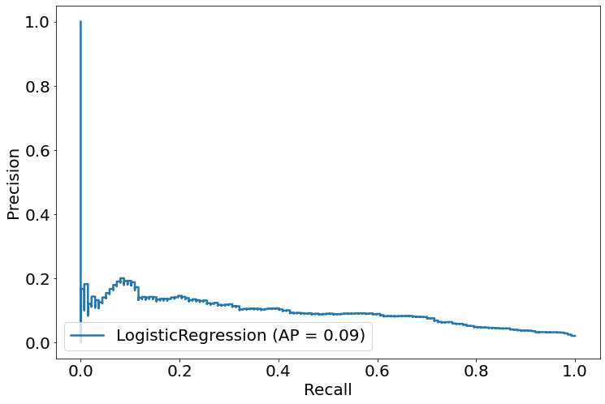
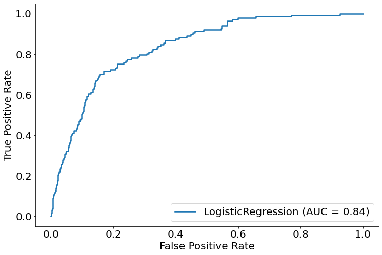
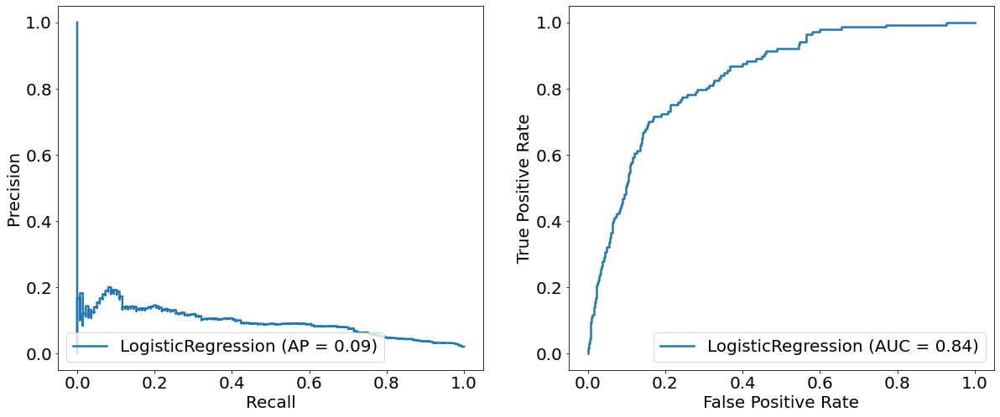
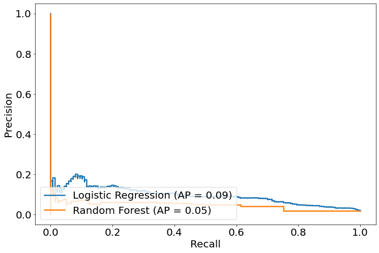
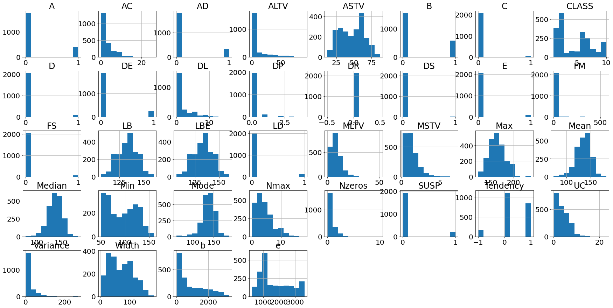
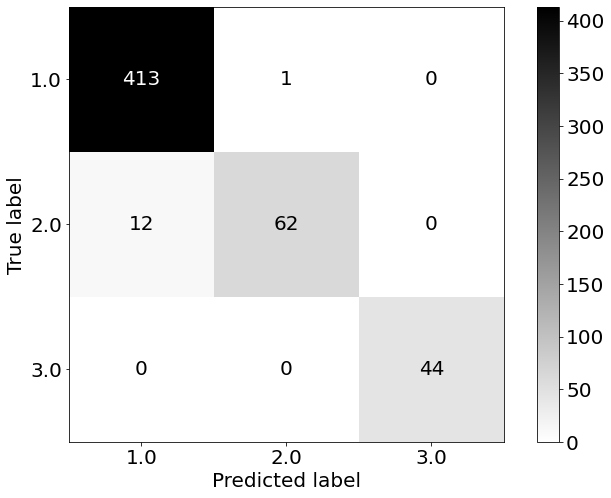
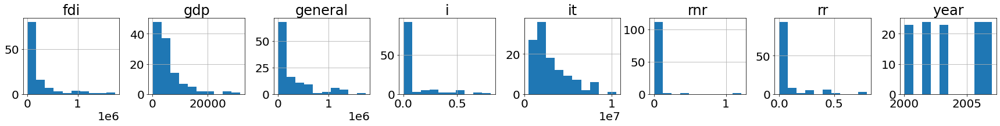
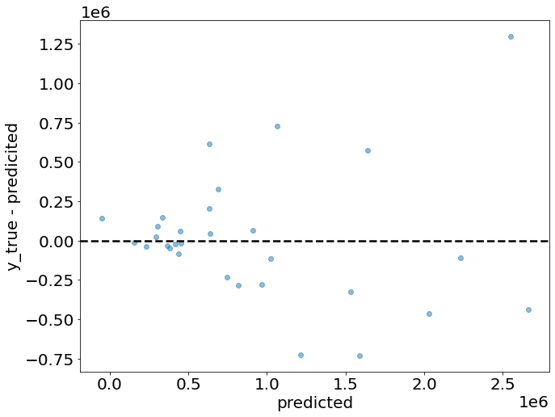
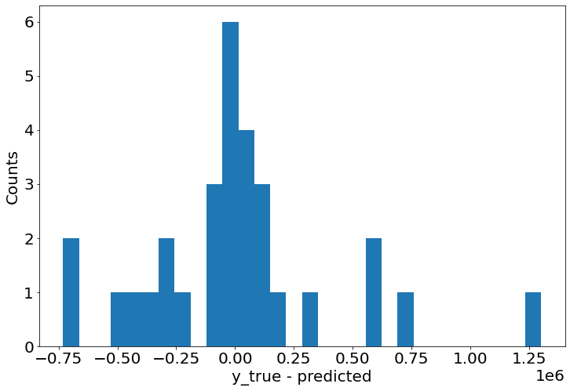
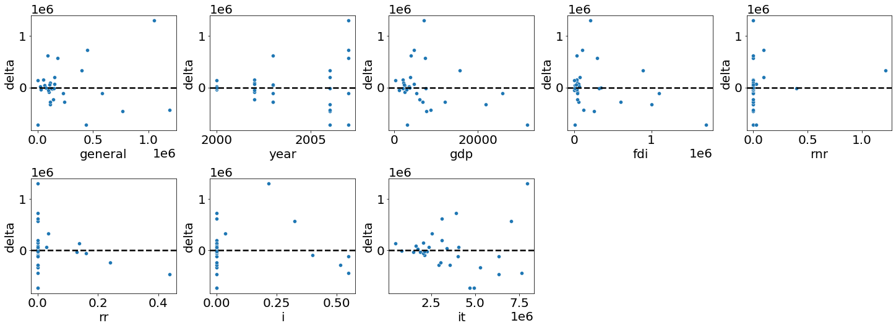

#code adapted from https://github.com/thomasjpfan/ml-workshop-intermediate-1-of-2import sklearn
import numpy as np
import pandas as pd
import matplotlib.pyplot as plt
plt.rcParams['font.size'] = 20
plt.rcParams['figure.figsize'] = [12, 8]
plt.rcParams['lines.linewidth'] = 2.5
plt.rcParams['savefig.bbox'] = 'tight'
plt.rcParams["savefig.dpi"] = 300
sklearn.set_config(display='diagram')url = 'https://raw.githubusercontent.com/davidrkearney/colab-notebooks/main/datasets/strokes_training.csv'
df = pd.read_csv(url, error_bad_lines=False)
df
df=df.dropna()
df.isnull().sum()
df.columns
sklearn.set_config(display='diagram')
X, y = df.drop(['stroke', 'id'], axis = 1), df['stroke']
X = X.select_dtypes(include='number')
X
X_train, X_test, y_train, y_test = train_test_split(X, y, random_state=42)X.head()| age | hypertension | heart_disease | avg_glucose_level | bmi | |
|---|---|---|---|---|---|
| 1 | 58.0 | 1 | 0 | 87.96 | 39.2 |
| 3 | 70.0 | 0 | 0 | 69.04 | 35.9 |
| 6 | 52.0 | 0 | 0 | 77.59 | 17.7 |
| 7 | 75.0 | 0 | 1 | 243.53 | 27.0 |
| 8 | 32.0 | 0 | 0 | 77.67 | 32.3 |
Is this data imbalanced?
y.value_counts()0 28524
1 548
Name: stroke, dtype: int64y = (y == 1).astype('int')y.value_counts()0 28524
1 548
Name: stroke, dtype: int64Train models for prediction
Linear model
from sklearn.preprocessing import StandardScaler
from sklearn.linear_model import LogisticRegression
from sklearn.pipeline import Pipeline
from sklearn.model_selection import train_test_splitX_train, X_test, y_train, y_test = train_test_split(
X, y, stratify=y, random_state=42)log_reg = Pipeline([
('scaler', StandardScaler()),
('log_reg', LogisticRegression(random_state=42))])
log_reg.fit(X_train, y_train)Pipeline(steps=[('scaler', StandardScaler()),
('log_reg', LogisticRegression(random_state=42))])StandardScaler()
LogisticRegression(random_state=42)
y_pred = log_reg.predict(X_test)y_predarray([0, 0, 0, ..., 0, 0, 0])log_reg.score(X_test, y_test)0.9811502476609797from sklearn.metrics import classification_report
print(classification_report(y_test, y_pred)) precision recall f1-score support
0 0.98 1.00 0.99 7131
1 0.00 0.00 0.00 137
accuracy 0.98 7268
macro avg 0.49 0.50 0.50 7268
weighted avg 0.96 0.98 0.97 7268
/home/david/anaconda3/lib/python3.8/site-packages/sklearn/metrics/_classification.py:1221: UndefinedMetricWarning: Precision and F-score are ill-defined and being set to 0.0 in labels with no predicted samples. Use `zero_division` parameter to control this behavior.
_warn_prf(average, modifier, msg_start, len(result))# %load solutions/01-ex01-solutions.py
from sklearn.ensemble import RandomForestClassifier
rf = RandomForestClassifier(random_state=42)
rf.fit(X_train, y_train)
rf.score(X_test, y_test)
y_pred = rf.predict(X_test)
print(classification_report(y_test, y_pred)) precision recall f1-score support
0 0.98 1.00 0.99 7131
1 0.00 0.00 0.00 137
accuracy 0.98 7268
macro avg 0.49 0.50 0.50 7268
weighted avg 0.96 0.98 0.97 7268
Thresholds
Default
y_pred = log_reg.predict(X_test)
print(classification_report(y_test, y_pred)) precision recall f1-score support
0 0.98 1.00 0.99 7131
1 0.00 0.00 0.00 137
accuracy 0.98 7268
macro avg 0.49 0.50 0.50 7268
weighted avg 0.96 0.98 0.97 7268
/home/david/anaconda3/lib/python3.8/site-packages/sklearn/metrics/_classification.py:1221: UndefinedMetricWarning: Precision and F-score are ill-defined and being set to 0.0 in labels with no predicted samples. Use `zero_division` parameter to control this behavior.
_warn_prf(average, modifier, msg_start, len(result))Using probabilities
y_proba = log_reg.predict_proba(X_test)y_proba[65:70]array([[9.99513156e-01, 4.86844076e-04],
[9.82052253e-01, 1.79477470e-02],
[9.94416208e-01, 5.58379215e-03],
[8.50081179e-01, 1.49918821e-01],
[9.95569630e-01, 4.43036992e-03]])y_pred[65:70]array([0, 0, 0, 0, 0])Threshold at 0.50
y_pred_50 = y_proba[:, 1] > 0.5
print(classification_report(y_test, y_pred_50)) precision recall f1-score support
0 0.98 1.00 0.99 7131
1 0.00 0.00 0.00 137
accuracy 0.98 7268
macro avg 0.49 0.50 0.50 7268
weighted avg 0.96 0.98 0.97 7268
/home/david/anaconda3/lib/python3.8/site-packages/sklearn/metrics/_classification.py:1221: UndefinedMetricWarning: Precision and F-score are ill-defined and being set to 0.0 in labels with no predicted samples. Use `zero_division` parameter to control this behavior.
_warn_prf(average, modifier, msg_start, len(result))Threshold at 0.25
y_pred_25 = y_proba[:, 1] > 0.25
print(classification_report(y_test, y_pred_25)) precision recall f1-score support
0 0.98 1.00 0.99 7131
1 0.00 0.00 0.00 137
accuracy 0.98 7268
macro avg 0.49 0.50 0.50 7268
weighted avg 0.96 0.98 0.97 7268
Threshold at 0.75
y_pred_75 = y_proba[:, 1] > 0.75
print(classification_report(y_test, y_pred_75)) precision recall f1-score support
0 0.98 1.00 0.99 7131
1 0.00 0.00 0.00 137
accuracy 0.98 7268
macro avg 0.49 0.50 0.50 7268
weighted avg 0.96 0.98 0.97 7268
from sklearn.metrics import plot_precision_recall_curve
plot_precision_recall_curve(log_reg, X_test, y_test, name="LogisticRegression")<sklearn.metrics._plot.precision_recall_curve.PrecisionRecallDisplay at 0x7f6fc27e78b0>
from sklearn.metrics import plot_roc_curve
plot_roc_curve(log_reg, X_test, y_test, name="LogisticRegression")<sklearn.metrics._plot.roc_curve.RocCurveDisplay at 0x7f6fc075e790>
fig, (ax1, ax2) = plt.subplots(1, 2, figsize=(20, 8))
plot_precision_recall_curve(log_reg, X_test, y_test, name="LogisticRegression", ax=ax1)
plot_roc_curve(log_reg, X_test, y_test, name="LogisticRegression", ax=ax2)<sklearn.metrics._plot.roc_curve.RocCurveDisplay at 0x7f6fc06594f0>
from sklearn.ensemble import RandomForestClassifier
rf = RandomForestClassifier(random_state=42)
rf.fit(X_train, y_train)RandomForestClassifier(random_state=42)
fig, ax = plt.subplots()
plot_precision_recall_curve(log_reg, X_test, y_test, ax=ax, name="Logistic Regression")
plot_precision_recall_curve(rf, X_test, y_test, ax=ax, name="Random Forest")<sklearn.metrics._plot.precision_recall_curve.PrecisionRecallDisplay at 0x7f6fc05cd940>
Exercise 2
- Plot the roc curve of the logistic regression model and the random forest model on the same axes.
- Train a
sklearn.dummy.DummyClassifier(strategy='prior')on the training dataset and plot the precision recall curve and the roc curve with the test dataset. - What is the ROC AUC and the average precision for the dummy classifer?
- Extra: Compute the f1 score for three models we have trained so far. While model performs the best according to the f1 score? Hint:
f1_scoreis insklearn.metrics
Decision function
Comparing decision function vs predictions
log_reg_decision = log_reg.decision_function(X_test)np.all((log_reg_decision > 0) == log_reg.predict(X_test))Truelog_reg_pred = log_reg.predict_proba(X_test)log_reg_predarray([[0.99375825, 0.00624175],
[0.99785633, 0.00214367],
[0.98641586, 0.01358414],
...,
[0.9772597 , 0.0227403 ],
[0.93760339, 0.06239661],
[0.99690984, 0.00309016]])Computing the predict_proba from the decision function
1/(1 + np.exp(-log_reg_decision))array([0.00624175, 0.00214367, 0.01358414, ..., 0.0227403 , 0.06239661,
0.00309016])log_reg_pred[:, 1]array([0.00624175, 0.00214367, 0.01358414, ..., 0.0227403 , 0.06239661,
0.00309016])Ranking metrics
from sklearn.metrics import average_precision_scoreUsing the decision function to compute the average precision
average_precision_score(y_test, log_reg_decision)0.09421224656746816Using predict_proba to compute the average precision
average_precision_score(y_test, log_reg_pred[:, 1])0.09421224656746816Exercise 3
- Compute the
roc_auc_scorefor the random forest. Hint: Usepredict_proba. - Train a
sklearn.svm.SVCmodel on the training datast and compute the average precision. Hint: Usedecision_function.
# %load solutions/01-ex03-solutions.py
from sklearn.metrics import roc_auc_score
rf_proba = rf.predict_proba(X_test)
roc_auc_score(y_test, rf_proba[:, 1])
from sklearn.svm import SVC
svc = SVC(random_state=0)
svc.fit(X_train, y_train)
svc_decision = svc.decision_function(X_test)
roc_auc_score(y_test, svc_decision)0.538190915167353Multiclass
## Reading the dataset using pandas
import pandas as pd
url = 'https://raw.githubusercontent.com/davidrkearney/colab-notebooks/main/datasets/CTG.csv'
df = pd.read_csv(url, error_bad_lines=False)
df| FileName | Date | SegFile | b | e | LBE | LB | AC | FM | UC | ... | C | D | E | AD | DE | LD | FS | SUSP | CLASS | NSP | |
|---|---|---|---|---|---|---|---|---|---|---|---|---|---|---|---|---|---|---|---|---|---|
| 0 | Variab10.txt | 12/1/1996 | CTG0001.txt | 240.0 | 357.0 | 120.0 | 120.0 | 0.0 | 0.0 | 0.0 | ... | 0.0 | 0.0 | 0.0 | 0.0 | 0.0 | 0.0 | 1.0 | 0.0 | 9.0 | 2.0 |
| 1 | Fmcs_1.txt | 5/3/1996 | CTG0002.txt | 5.0 | 632.0 | 132.0 | 132.0 | 4.0 | 0.0 | 4.0 | ... | 0.0 | 0.0 | 0.0 | 1.0 | 0.0 | 0.0 | 0.0 | 0.0 | 6.0 | 1.0 |
| 2 | Fmcs_1.txt | 5/3/1996 | CTG0003.txt | 177.0 | 779.0 | 133.0 | 133.0 | 2.0 | 0.0 | 5.0 | ... | 0.0 | 0.0 | 0.0 | 1.0 | 0.0 | 0.0 | 0.0 | 0.0 | 6.0 | 1.0 |
| 3 | Fmcs_1.txt | 5/3/1996 | CTG0004.txt | 411.0 | 1192.0 | 134.0 | 134.0 | 2.0 | 0.0 | 6.0 | ... | 0.0 | 0.0 | 0.0 | 1.0 | 0.0 | 0.0 | 0.0 | 0.0 | 6.0 | 1.0 |
| 4 | Fmcs_1.txt | 5/3/1996 | CTG0005.txt | 533.0 | 1147.0 | 132.0 | 132.0 | 4.0 | 0.0 | 5.0 | ... | 0.0 | 0.0 | 0.0 | 0.0 | 0.0 | 0.0 | 0.0 | 0.0 | 2.0 | 1.0 |
| ... | ... | ... | ... | ... | ... | ... | ... | ... | ... | ... | ... | ... | ... | ... | ... | ... | ... | ... | ... | ... | ... |
| 2124 | S8001045.dsp | 6/6/1998 | CTG2127.txt | 1576.0 | 3049.0 | 140.0 | 140.0 | 1.0 | 0.0 | 9.0 | ... | 0.0 | 0.0 | 1.0 | 0.0 | 0.0 | 0.0 | 0.0 | 0.0 | 5.0 | 2.0 |
| 2125 | S8001045.dsp | 6/6/1998 | CTG2128.txt | 2796.0 | 3415.0 | 142.0 | 142.0 | 1.0 | 1.0 | 5.0 | ... | 0.0 | 0.0 | 0.0 | 0.0 | 0.0 | 0.0 | 0.0 | 0.0 | 1.0 | 1.0 |
| 2126 | NaN | NaN | NaN | NaN | NaN | NaN | NaN | NaN | NaN | NaN | ... | NaN | NaN | NaN | NaN | NaN | NaN | NaN | NaN | NaN | NaN |
| 2127 | NaN | NaN | NaN | NaN | NaN | NaN | NaN | NaN | NaN | NaN | ... | NaN | NaN | NaN | NaN | NaN | NaN | NaN | NaN | NaN | NaN |
| 2128 | NaN | NaN | NaN | NaN | NaN | NaN | NaN | NaN | 564.0 | 23.0 | ... | NaN | NaN | NaN | NaN | NaN | NaN | NaN | NaN | NaN | NaN |
2129 rows × 40 columns
sklearn.set_config(display='diagram')
df=df.dropna()
df.isnull().sum()
X, y = df.drop(['NSP', 'FileName', 'Date', 'SegFile'], axis = 1), df['NSP']
X
_ = X.hist(figsize=(30, 15), layout=(5, 8))
X_train, X_test, y_train, y_test = train_test_split(
X, y, stratify=y, random_state=42)rf = RandomForestClassifier(random_state=42).fit(X_train, y_train)from sklearn.metrics import plot_confusion_matrixplot_confusion_matrix(rf, X_test, y_test, cmap='gray_r')<sklearn.metrics._plot.confusion_matrix.ConfusionMatrixDisplay at 0x7f6fb9cb03a0>
y_pred = rf.predict(X_test)print(classification_report(y_test, y_pred)) precision recall f1-score support
1.0 0.97 1.00 0.98 414
2.0 0.98 0.84 0.91 74
3.0 1.00 1.00 1.00 44
accuracy 0.98 532
macro avg 0.99 0.95 0.96 532
weighted avg 0.98 0.98 0.97 532
from sklearn.metrics import roc_auc_scorerf_y_pred_proba = rf.predict_proba(X_test)roc_auc_score(y_test, rf_y_pred_proba, multi_class='ovo')0.9980180279093323roc_auc_score(y_test, rf_y_pred_proba, multi_class='ovr')0.9985885196707779Regression
import pandas as pd
url = 'https://raw.githubusercontent.com/davidrkearney/Kearney_Data_Science/master/_notebooks/df_panel_fix.csv'
df = pd.read_csv(url, error_bad_lines=False)
df
import pandas as pd
import sklearn
from sklearn.datasets import fetch_openml
from sklearn.model_selection import train_test_split
df.columns
sklearn.set_config(display='diagram')
df=df.dropna()
df.isnull().sum()
X, y = df.drop(['specific', 'Unnamed: 0'], axis = 1), df['specific']
X = X.select_dtypes(include='number')
X
_ = X.hist(figsize=(30, 15), layout=(5, 8))
from sklearn.linear_model import Ridge
from sklearn.preprocessing import StandardScaler
X_train, X_test, y_train, y_test = train_test_split(
X, y, random_state=42)from sklearn.pipeline import make_pipeline
ridge = make_pipeline(StandardScaler(), Ridge())
ridge.fit(X_train, y_train)Pipeline(steps=[('standardscaler', StandardScaler()), ('ridge', Ridge())])StandardScaler()
Ridge()
ridge.score(X_test, y_test)0.7482100751181446from sklearn.metrics import r2_score
from sklearn.metrics import mean_squared_error
from sklearn.metrics import mean_absolute_errorridge_pred = ridge.predict(X_test)Look at predictions
ridge_pred[:10]array([2027961.35376795, 1530619.74443469, 1639626.98468177,
965135.26705736, 438579.62245477, 690017.03701487,
337043.03751396, 630817.75885244, 2231143.82393699,
-50934.54700348])ridge_r2 = r2_score(y_test, ridge_pred)
ridge_r20.7482100751181446ridge_mse = mean_squared_error(y_test, ridge_pred)
ridge_mse165402066384.76834ridge_mae = mean_absolute_error(y_test, ridge_pred)
ridge_mae275823.0351447304Prediction plots
fig, ax = plt.subplots()
delta = y_test - ridge_pred
ax.plot(ridge_pred, delta, 'o', alpha=0.5)
ax.axhline(y=0, c='k', ls='--')
ax.set(xlabel='predicted', ylabel='y_true - predicited', aspect='equal');
Prediction plots histogram
fig, ax = plt.subplots()
ax.hist(delta, bins=30)
ax.set(xlabel="y_true - predicted", ylabel="Counts");
# %load solutions/01-ex04-solutions.py
from sklearn.ensemble import RandomForestRegressor
rf = RandomForestRegressor(random_state=42).fit(X_train, y_train)
rf_pred = rf.predict(X_test)
r2_score(y_test, rf_pred)
mean_squared_error(y_test, rf_pred)
mean_absolute_error(y_test, rf_pred)243725.82533333328Prediction plots per feature
from sklearn.datasets import load_boston
import pandas as pdX_df = pd.DataFrame(X, columns=boston.feature_names)
X_train, X_test, y_train, y_test = train_test_split(
X, y, random_state=42)ridge = make_pipeline(StandardScaler(), Ridge(random_state=42))
ridge.fit(X_train, y_train)Pipeline(steps=[('standardscaler', StandardScaler()),
('ridge', Ridge(random_state=42))])StandardScaler()
Ridge(random_state=42)
ridge_pred = ridge.predict(X_test)X_test.head()| general | year | gdp | fdi | rnr | rr | i | it | |
|---|---|---|---|---|---|---|---|---|
| 166 | 763953.0 | 2006 | 7688.67 | 259335 | 0.0 | 0.4375 | 0.000000 | 6349262 |
| 262 | 112137.0 | 2006 | 21900.19 | 1000069 | 0.0 | 0.0000 | 0.000000 | 5304833 |
| 11 | 178705.0 | 2007 | 7360.92 | 299892 | 0.0 | 0.0000 | 0.324324 | 7040099 |
| 139 | 241282.0 | 2003 | 6867.70 | 53903 | 0.0 | 0.0000 | 0.516129 | 3586373 |
| 78 | 100000.0 | 2002 | 2523.73 | 41726 | 0.0 | 0.0000 | 0.400000 | 2138758 |
X_analysis = X_test.assign(
delta=y_test - ridge_pred
)import seaborn as sns
import matplotlib.pyplot as plt
columns = X_analysis.columns
n_features = X.shape[1]
fig, axes = plt.subplots(3, 5, figsize=(20, 10), constrained_layout=True)
for i, ax in enumerate(axes.ravel()):
if i >= n_features:
ax.set_visible(False)
continue
sns.scatterplot(x=columns[i], y='delta', ax=ax, data=X_analysis)
ax.axhline(y=0, c='k', ls='--')